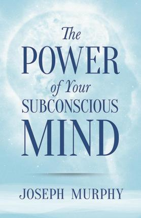

The power of subconsicous mind - Dr. Joseph Murphy
The Power of Your Subconscious Mind has been a bestseller since its first publication in 1963, selling many millions of copies since its original publication. It is one of the most brilliant and beloved spiritual self-help works of all time which can help you heal yourself, banish your fears, sleep better, enjoy better relationships and just feel happier. The techniques are simple and results come quickly. You can improve your relationships, your finances, your physical well-being.
Dr. Joseph Murphy explains that life events are actually the result of the workings of your conscious and subconscious minds. He suggests practical techniques through which one can change one's destiny, principally by focusing and redirecting this miraculous energy. Years of research studying the world's major religions convinced him that some Great Power lay behind all spiritual life and that this power is within each of us.
The Power of Your Subconscious Mind will open a world of success, happiness, prosperity, and peace for you.
Mrs.Funnybones - Twinkle Khanna’s
Good morning, it’s 6 a.m. and I am wide awake because the man of the house has decided that he needs to perform a series of complex manoeuvres that involve him balancing on his left elbow. When I fell asleep last night, there was a baby lying next to me. Her smelly diaper is still wedged on my head but aside from this rather damp clue, I can't seem to find her anywhere. I could ask my mother-in-law if she has seen the baby, but she may just tell me that I need to fast on alternate Mondays, and God will deliver the baby back to me . . . Full of wit and delicious observations, Mrs Funnybones captures the life of the modern Indian woman—a woman who organizes dinner each evening, even as she goes to work all day, who runs her own life but has to listen to her Mummyji, who worries about her weight and the state of the country. Based on Twinkle Khanna’s super-hit column, Mrs Funnybones marks the debut of one of our funniest, most original voices